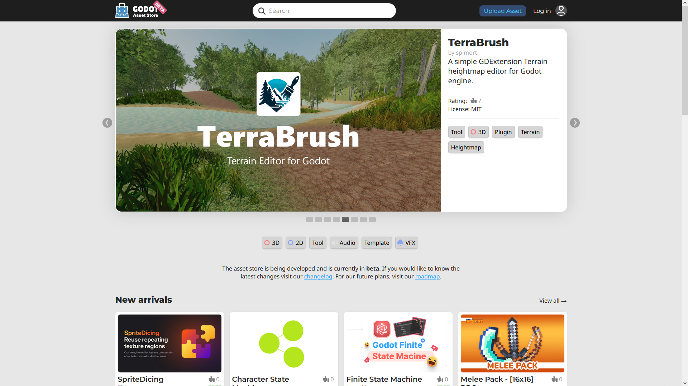
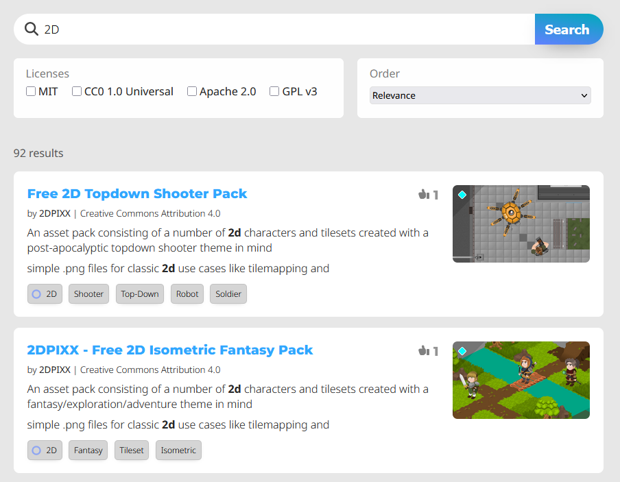
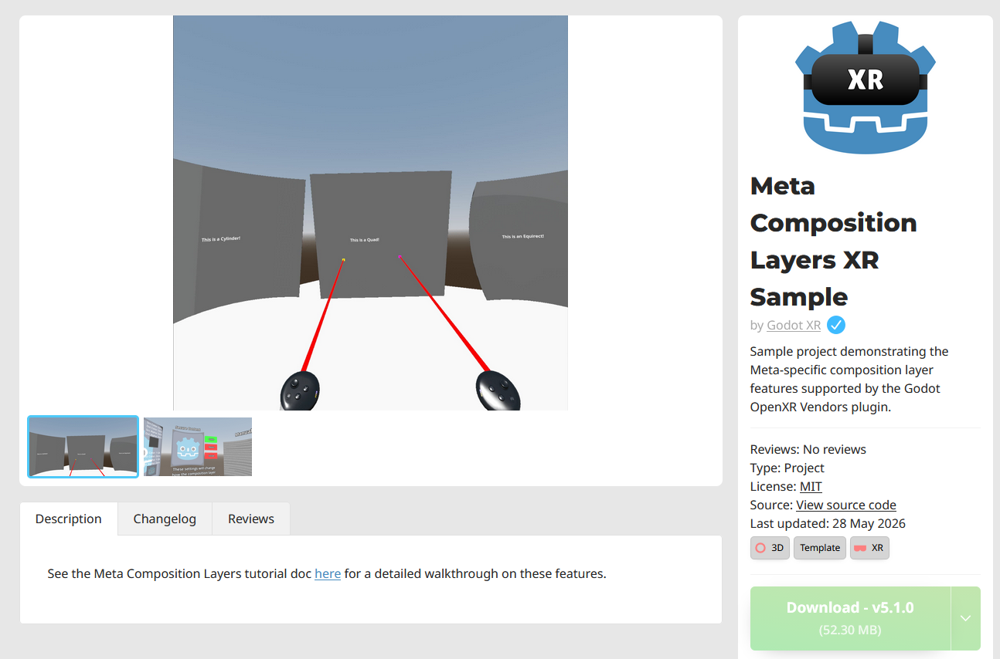
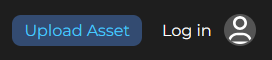
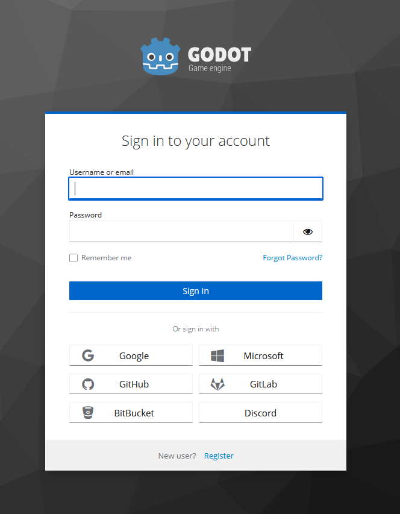

Using the Asset Store Website
Overview
As mentioned before, you can access the web frontend of the Asset Store on Godot's official website. This is what it looks like when you first visit it:

Searching
The search bar at the top of the page can be used to find assets. You can either
type in the name of something specific you're looking for, or a tag such as 2D.

Note that the search results are not updated in real-time, so you will have to re-submit the search query each time you change the query settings.
You can also click on any tag a project has to pull up a search of other assets with that tag.
Breakdown of an asset
Now let's take a look at what an asset's page looks like and what it contains.

You'll immediately notice media showing off the asset in the center of the screen. Below that are 3 tabs, the description, changelog, and reviews.
The panel on the left is where you'll find the asset author, tags, license, source code link if applicable, download button, and the option to add it to your library if you're logged in.
If you are logged in, there will be a "Flag this Asset" button below this panel. Use this to report the asset if there's an issue that may warrant removal, such as copyright infringement, theft, or impersonation. This is not for bug reports for the asset itself.
Registering and logging in
In order to upload assets to the Asset Store, leave reviews on assets, and report assets, you need to login. You do not need to be logged in to browse and download the assets.
The login/registration page can be accessed from any page, just click the button on the top right of the website, next to the "upload asset" button.

There are several options for logging in using other accounts you may already have, such as GitHub and GitLab, or you can create a new account specifically for the Asset Store.
